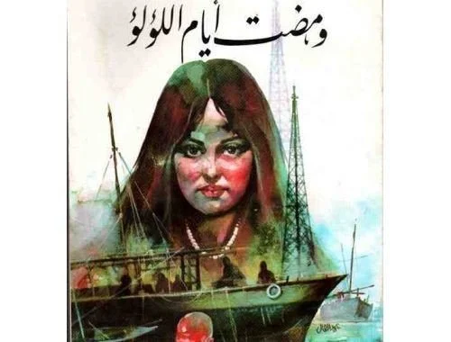

The original cover of the 1984 edition of Gone are the Days of the Pearls
We find it almost impossible to romanticize anything about Gulf societies as we know them today. It seems that every time an Egyptian thinks of the Gulf, we conjure up a vivid fantasy of towers of glass and steel springing from the middle of nowhere, against the backdrop of endless desert, bottomless oil fields, and an insatiable consumerism that is deeply at odds with a conservative traditionalism and religiosity. Nearly all our stereotypes are shrouded in the mystique of nomadism, instant wealth and lack of cultural heritage, and we largely dismiss contemporary attempts at cultural patronage as making up for lost time.
It is also no secret that modern Egyptian literature was entirely Egypt-centric and rarely took notice of the rest of the Arab world, especially the Gulf. For both these reasons it is rare indeed to find an Egyptian writer preoccupied with the history of the Gulf pre-oil, and with the cataclysmic changes oil was effecting on Gulf societies and peoples by the early 1960s — beyond the influence they had on Egypt.
Over a meal of spaghetti, we are introduced to the narrator — a famous writer — and his infatuation with a woman from the Gulf who is sitting at a nearby table. Unsurprisingly, she soon requests to meet him and share her tragic tale. Over clandestine meetings orchestrated by her Egyptian friend, the nameless Gulfie protagonist, who occasionally gives a false name, such as Noaf or Wadud, narrates the history of her family in one of the states overlooking the Persian Gulf over the past century or so.
Abdel Quddous does little to mask his own identity as writer and projects his obsessive yet shallow interest in psychoanalysis, constantly referring to himself as psychiatrist and Noaf as his patient. This was not his first dabbling in psychology or psychoanalysis. He wrote extensively about psychoanalysis and writing in earlier works, such as Thuqub fi Thawb al-Aswad (Holes in a Black Dress, 1962), Bi'r al-Hirman (Well of Longing, 1962), Anf wTthalathat Auyun (A Nose and Three Eyes, 1964), and Al-Azraa w al-Shaar al-Abyad (The Virgin and White Hair, 1977).
In Gone are the Days of the Pearls, written when Abdel Quddous was in his mid-60s, he writes at length about his moral and ethical duty as an established writer to listen to his readers' problems and seek inspiration from their stories, although the latter seems at odds with that claim of being dutifully helpful. For him, there doesn't seem to be a problem in rehashing stories readers entrust him with as bestselling novels. So strong is his desire to listen to the story of this exotic Gulfie woman, that we feel that Abdel Quddous, or the famous writer, is living vicariously through her story, parasitizing on her memories of her family and people.
Abdel Quddous posits a rather clumsy and superficial deployment of psychological catharsis: by merely talking about her troubling history, his protagonist will be released from the weight of all the contradictions history has imposed on her. He follows this idea throughout the novel by showing how Noaf slowly transforms just by telling her story.
Yet despite the semi-clinical setting and the psychiatry metaphor, Abdel Quddous still manages to make us uncomfortable with his constant hints at his repressed desire to "claim" Noaf for his own. The weakest parts of the novel are probably those where he justifies his writer's predatory instincts towards the psychologically fragile Noaf. He even goes as far as saying that sometimes patients need to have sexual relations with their physicians as part of the therapeutic experience, raising serious questions about his understanding of what constitutes psychiatric practice and the ethical parameters of helping others.
Aside from its pseudo-psychological premise and uncomfortable sexual dynamic, Gone are the Days of the Pearls offers an Egyptian's serious re-imagining of the lives of Gulf residents lived before the oil boom. We hear about the vibrant trade routes, the pearl-hunting industry and the commercially prosperous ports that peppered the Persian Gulf. Although still portraying Gulf societies as conservative and undermining the agency and rights of women and children, Abdel Quddous' narration gives insight to a society whose economy and way of life endured for centuries as part of a wider commercial and cultural network that reached all the way to Sri Lanka. He writes of sea-faring Gulf societies that engaged in wide trade and commercial networks closely linked to the Indian Ocean, and who used the Indian rupee as their currency until 1950s.
Noaf's — or rather Ihsan's — censure does not rise to a well-thought-out critique, nor go so far as to criticize the Gulf monarchs and their politics, but points out the moral hypocrisy Gulf societies have been accused of, again and again: The embrace of rampant capitalism and a lavish consumerist lifestyle, the complete repression of women and minorities, and control over all media and press.
One shortcoming is that the book exclusively points at gender inequality, rather than the broader problems of oil-fueled dictatorships. There is no mistake about the degree of injustice leveled against women in Gulf societies, and Noaf's grievances about her family and the men in her life feel real and still relevant. But one cannot isolate misogyny from a larger system of inequality, or from oil-driven consumerism and its effects on Gulf societies and their relationships to the outside world.
In a sub-plot and in many passing references, Ihsan points out the parasitic relationship many Egyptians developed with the people of the Gulf. With references to rich old Gulfie men "buying off" younger Egyptian brides, through Egyptians befriending Gulf visitors in hopes of securing some kind of business, to the simple expectation that all people from the Gulf are all potential business ventures. Both parties deserve condemnation for perpetuating this dehumanizing dynamic, and Abdel Quddous tries to show this, though his final resolution in this regard leaves a lot to be desired.
In his attempt to free Noaf from her bewildered frustration at her society's moral hypocrisy, he explains that "The only difference between one Arab society and the other is who encountered Europe first!" This is historically inaccurate — most states bordering the Persian Gulf, "encountered" Europe as early as the 15th Century and had treaties with Britain as early as 1820, quite early even by Egyptian standards — and it does not help to address the root of the problem. In fact, the historical forms of government of Noaf's society were never resonant with that of the modern European nation-state. With the exception of Saudi Arabia, no Gulf society attempted a state-building project before World War II.
But overall Noaf's nostalgia for her grandfather's pearling adventures across the Indian Ocean and her dismay at vapid consumerism is a welcome change from the prevalent narratives we have about Gulf societies and their histories. It might be undermined by Abdel Quddous' sloppy psychologisms, but it's an unusual precedent that forces us to go beyond facile stereotypes and racist misconceptions.
Abdel Quddous' beleaguered protagonist relates his history of the Gulf in intimate conversations with the "famous writer" during a vacation in Egypt, during which she's enjoying the nocturnal diversions Cairo had to offer. The conversational mode and the secrecy surrounding the two main characters is a hallmark of Abdel Quddous' style, where as reader we always feel we're witnessing something we shouldn't. This both excites a sense of voyeurism and curiosity, and remains immensely entertaining because of its light, gossipy tone. Ihsan spent years training and then editing his mother's salacious left-leaning magazine Rose al-Yusuf, acquiring the skills to write catchy pieces that were higher in entertainment value than literary merit. Never one to shy away from controversy, Abdel Quddous was deemed by many contemporaries as a sensationalist, obscene writer, with poet and literary critic Abbas Akkad describing his novels as "bedroom literature" in reference to his graphic descriptions of sex. For many he was a guilty pleasure, rife with bourgeois romanticism and softcore porn — perfect, perhaps, for a light summer read. Yet Abdel Quddous always aligned his novels with social causes, including an approximation of feminism, such as in Gone are the Days of the Pearls.
And even at its most journalistic and sensational, Gone are the Days of the Pearls raises crucial questions about our complex relationship with one of the most significant phenomena in the past half-century — the rise of oil monarchies — and what this tells us about these societies and about ourselves, beyond the pearls, the oil and our own sense of false grandiosity.